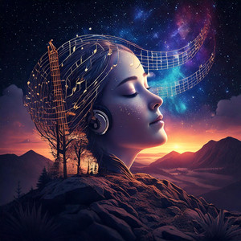

My Life's Soundtrack
Music isn't just sound—it's time travel. A single chord can teleport me to memories I forgot I had. When the bass drops, my soul syncs with the universe's rhythm in ways words can't describe.
I chase that perfect moment when melody and emotion collide—when goosebumps spread like wildfire during a guitar solo, or when lyrics articulate feelings I couldn't name. Music speaks the language my heart understands best.
Creating music is alchemy: transforming silence into gold. Whether composing digital beats or jamming acoustically, the process feels like uncovering hidden frequencies that already existed in the cosmos.
In a world of noise, music is the only noise I need. It's mathematics made emotional, physics made visceral. My headphones aren't accessories—they're portals to alternate dimensions.
Back to Main Page